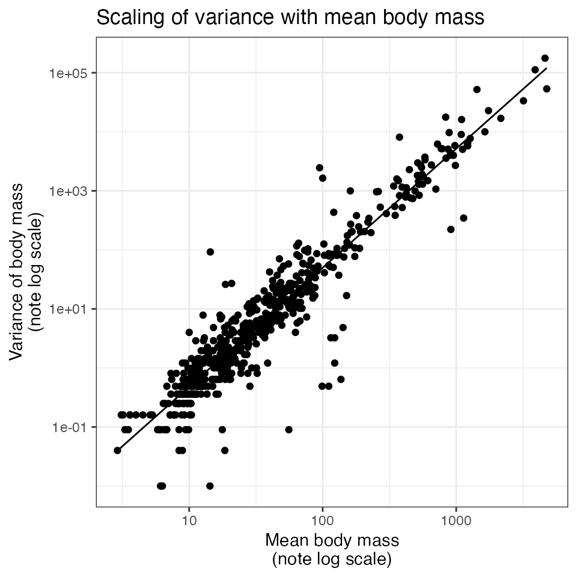

vignettes/stdev_scaling.Rmd
stdev_scaling.RmdThe CRC Handbook of Avian Body Masses (Dunning 2008) contains records of the mean and, for many species, the standard deviation of body mass for bird species. However, there are many records in the CRC Handbook that report mean body mass but no standard deviation, and it may also be desirable to estimate size distributions for species not included in this dataset (or even hypothetical species in a simulation or null model) based only on a mean body size. For birds in the Breeding Bird Survey, there is a strong scaling relationship between the mean and the standard deviation of body mass (Thibault et al. 2011). This package uses this scaling relationship to estimate the standard deviation of body mass from the mean. This vignette illustrates the scaling relationship and how it is used in the package.
The raw_masses dataset (included in bbssize) includes all records from the CRC Handbook (Dunning 2008) available for species in this subset of the Breeding Bird Survey.
raw_masses <- raw_massesOf the 897 records in raw_masses, 327 are missing the standard deviation (affecting 185 species).
For records with reports of standard deviation, there is a close scaling relationship between mean and variance of body mass. A linear model of the form log(variance(body_mass)) ~ log(mean(body_mass)) has a model R2 of 0.89.

The model parameters are:
#> (Intercept) log_m
#> -5.356149 2.009553Which translate into a scaling relationship of:
\(var(m) = 0.0047\bar{m}^{2.01}\)
We use this scaling relationship to estimate the standard deviations for records that have mass, but no reported standard deviation (327 records), shown in green in this plot:
The internal function birdsize:::estimate_sd can be used to estimate the standard deviation of body mass from the mean:
# Using estimate_sd:
birdsize:::estimate_sd(sp_mean = 100)
#> [1] 7.022316
# Calculated manually - note slight numeric discrepancy due to truncating parameters:
sqrt(0.0047 * 100 ^ 2.01)
#> [1] 7.015343See also Thibault et al. (2011) for this scaling relationship for a slightly different subset of the Breeding Bird Survey.